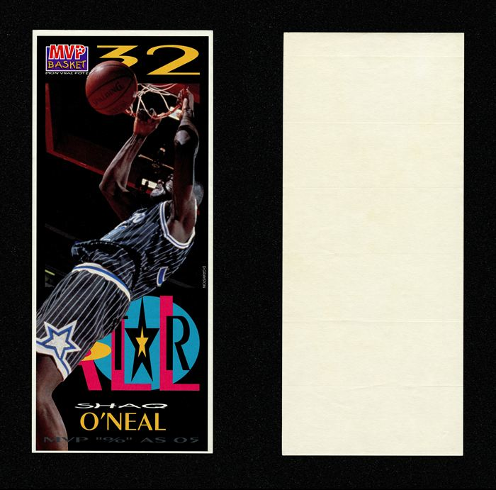
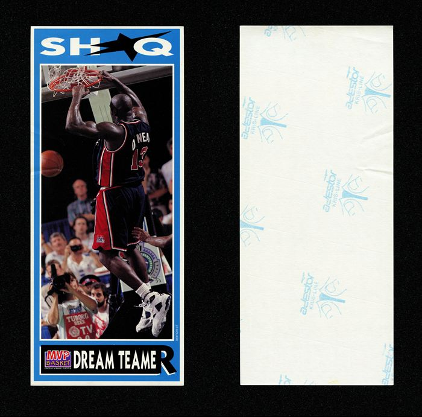
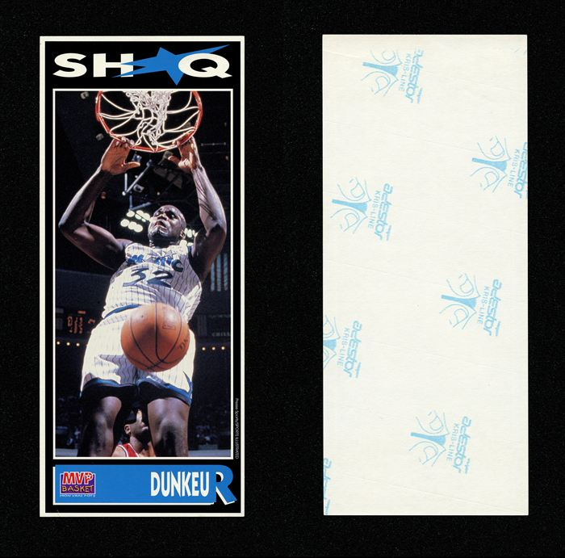
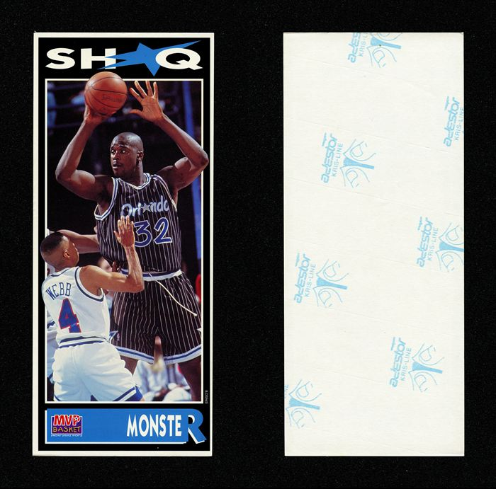
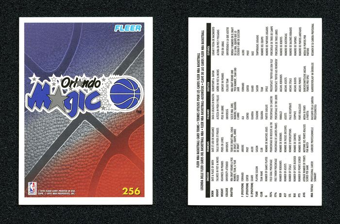
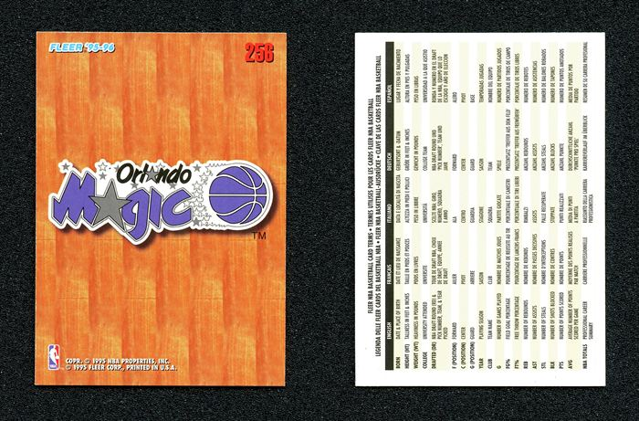

Cards printed for somewhere else. French insert sets sold ten to a pack, a Japanese Collector's Choice, German magazine giveaways, a Spanish deck of playing cards — the same player, packaged for a market that never watched him play in person.
He never suited up in any of these countries. The cards went anyway.
A slice of the Shaq collection, not a separate one — these cards are counted there too.












fourteen up — every international scan so far, out of 196 catalogued.